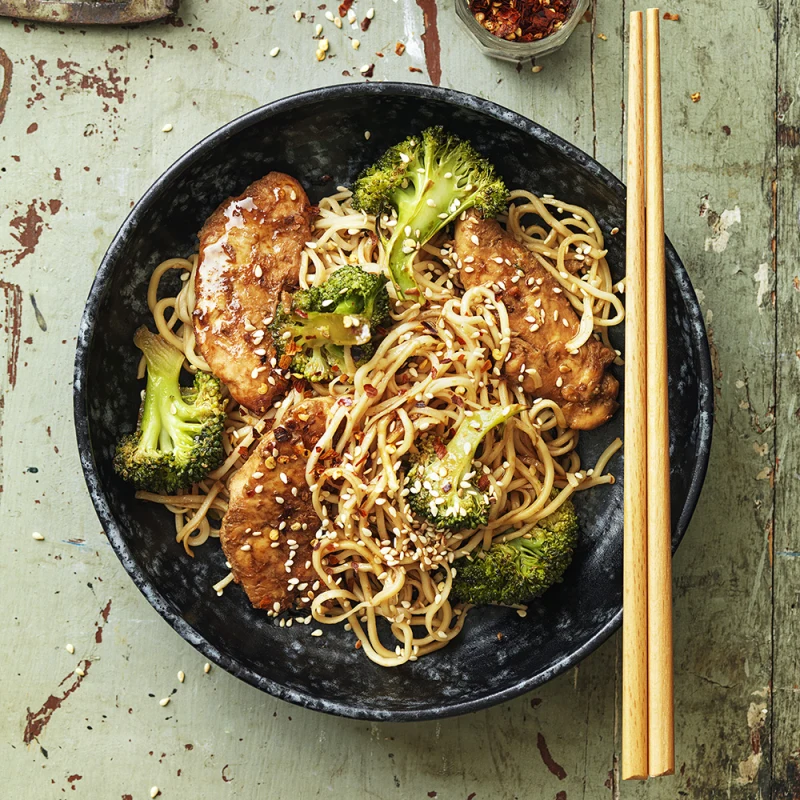

Gör så här:
Strimla kycklingen och blanda med soja. Stek i olja med salt, peppar och curry
Stek wokgrönsakerna och pressa över vitlöken.
Koka nudlarna och låt rinna av. Blanda alla ingredienser och strö över sesamfrön
Servera med sweet chilisås.